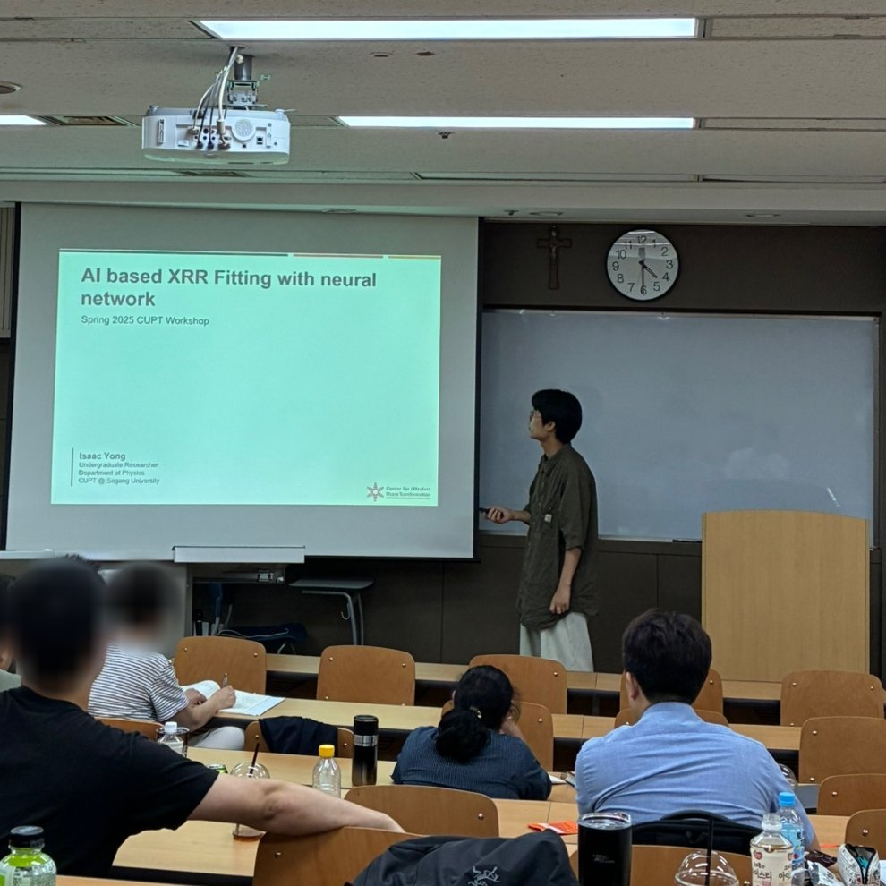
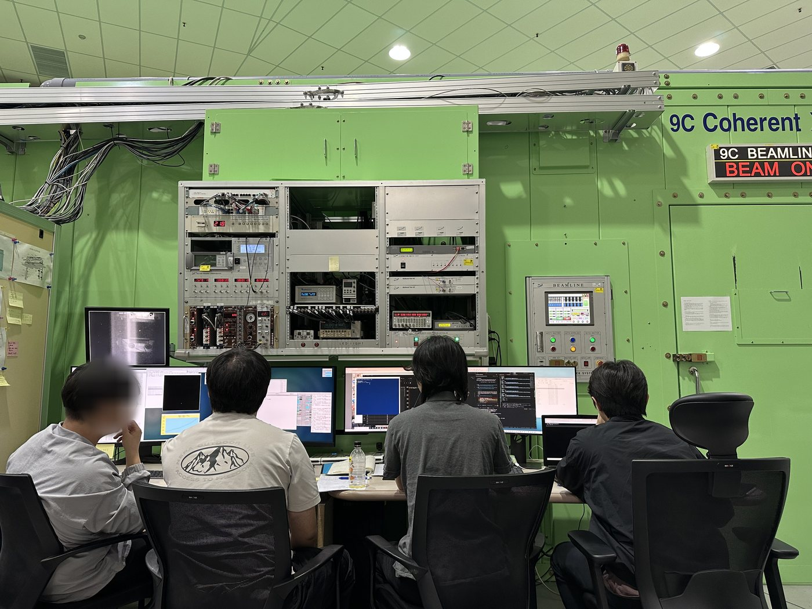
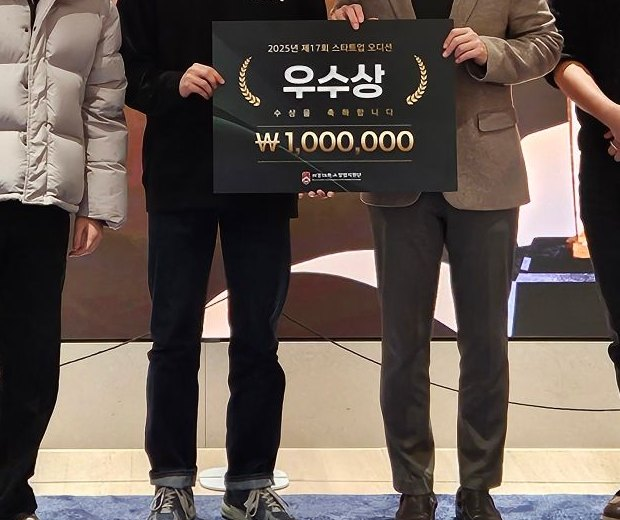
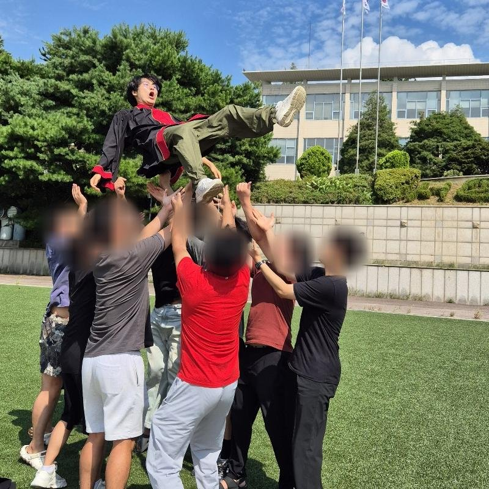

Scattering and diffraction, from waves to structure.
I study X-ray scattering and diffraction, developing ways to infer material structure and properties from measured data.
RESEARCH / APPROACH
From measurement to structure
I model scattering and diffraction, compute their predictions and compare them with experimental data. I also examine how accurately and uniquely the measurements determine structure.
01 · Physical modelling Describe scattering and diffraction through equations and simulation.
02 · Inverse problems Infer structure from diffraction and reflectivity, and study identifiability.
03 · Experimental data Process accelerator measurements and test them against physical models.

In the lab, the waves are X-rays.
The questions are about scattering and diffraction in general; the experiments I take part in are X-ray experiments, at synchrotron and X-ray free-electron laser beamlines, and the analysis that follows them. Most of the software further down started because one of these experiments needed it.
The three cases below are shown on simulated data, and each caption says so.

Case 1 · Dynamical diffraction
Each satellite grows on its own clock.
When a GHz sound wave enters a crystal from its surface, the lattice is strained periodically and the X-ray rocking curve grows satellite peaks beside the Bragg peak. Once the sound fills the crystal, the satellites are textbook; how they form while the wavefront is still crossing it is not.
TraTT computes it with time-dependent two-beam Takagi–Taupin equations. Satellite n keeps time by the depth the sound has filled: sin² in Laue geometry and, to within a few percent, tanh² in Bragg, with no fitted parameter. The solver is tested against the closed-form solutions without sound and against an independent Floquet solver.
Status: open-source solver (PyPI tratt 0.1, alpha); poster P2.17 at the KPS 2026 Fall Meeting. Calculation results, not yet compared with an experiment; the paper is an unsubmitted draft.
Case 2 · Phase retrieval
The detector keeps |F|² and loses the phase.
Coherent diffraction records only the intensity of the far field. QoraPhase, a JAX phase-retrieval framework for CDI, recovers the complex object from that intensity alone: here the run that four random starts agree on most, with the support found from the data. In Bragg CDI the recovered phase maps the lattice displacement inside a nanocrystal; turning it into a strain map is a separate geometry step outside QoraPhase.
Status: open-source framework (PyPI qoraphase 0.2), with origin, mask and support conventions written into the API and end-to-end tests on simulated data down to the noise floor. Validation on measured BCDI scans is still in progress.
Case 3 · Inverse problem
A film writes its thickness into fringes.
A thin film writes its thickness into the X-ray reflectivity as Kiessig fringes, Δq ≈ 2π/t, and its interface roughness into how fast the curve falls away. Reading the film back out of a measured curve is an inverse problem.
ReflectoLearn and the earlier XRefine hand that inverse problem to a neural network for a first guess, then fit through the same Abeles model. Here XRefine learns, then refines its own guess into a fit.
ReflectoLearn also asks how much one curve can fix. On simulated data, three single films turned out identifiable within the fit bounds, and most wrong answers were optimiser failures rather than model errors. Whether Fisher information predicts which fits fail is still unresolved. Checked results and open hypotheses are kept apart in its findings index.
Status: research code (0.1, not on PyPI), validated on simulated data only; measured XRR curves are not validated yet.
Research software
- QoraFlowPython, HDF5
Turning PAL-XFEL pump-probe detector frames into a time series.
Reads JUNGFRAU frames, laser on/off flags and QBPM readings from PAL-XFEL HDF5 files, then dark subtraction, normalisation, delay averaging, ROI intensity and centre of mass. A refactor of the earlier XFEL_data code by Kim Jooheun (@paulpeterkim), 2021–2023. Version 0.1, validated on synthetic data.
- ReflectoLearnPython, PyTorch
Reading film thickness, roughness and SLD straight from a reflectivity curve.
A differentiable Abeles transfer-matrix simulator makes training curves on the fly, with Poisson noise, resolution smearing and beam footprint; a 1D CNN predicts the parameters and a fit through the same simulator refines them. No dataset files needed. Version 0.1, validated on synthetic data only.
- QoraPhasePython, JAX
Recovering real-space objects from coherent diffraction patterns.
A composable, JAX-native phase-retrieval framework for CDI (ER, HIO, RAAR, shrinkwrap) on 2D or 3D arrays, CPU or GPU, with origin, mask and support conventions written into the API contract. On PyPI, 0.2.
- TraTTPython
Following how acoustic Bragg satellites form after a laser pulse.
A time-dependent Takagi–Taupin solver in numpy and scipy, checked against analytic ground truth in 54 tests. On PyPI, 0.1.
- QoraDFXMPySide6
Dark-field X-ray microscopy (DFXM) detector-image analysis.
A pure Python engine that fits ellipses to ring features and extracts ring profiles, with a headless CLI and a PySide6 desktop app. Version 0.1, validated on synthetic data.
- X-ray ToolkitES5, offline
Getting beamline numbers on a control-room PC with no internet.
About two dozen offline X-ray calculators and beamtime logbook templates. No server and no runtime fetches, written in ES5 so it runs on the CentOS 7 default browser, Firefox 60 ESR, in the hutch. Tests check the calculators against independent formulas.
General developer tools
Talks, code and notes
Talks, posters and awards
Conference presentations and an award, not journal papers.
Notes
On GitHub
Upstream pull requests
Submitted pull requests; listing them does not mean they were merged.

Happy to talk scattering, inverse problems, beamtime or scientific code.
